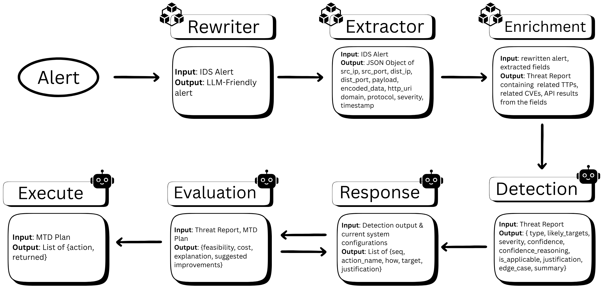
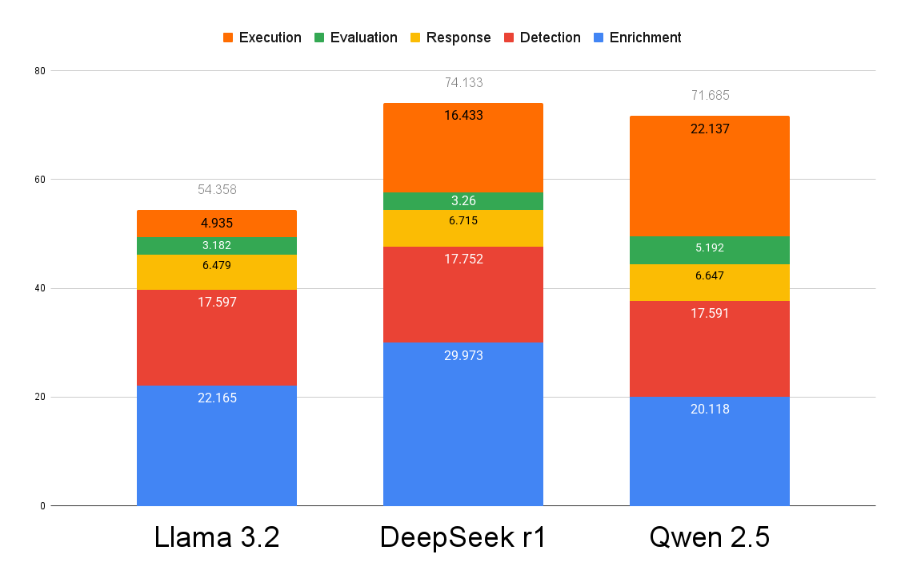

LLM-Powered Moving Target Defense for Real-Time Cyber Threat Response
A self-adaptive agentic architecture leveraging Large Language Models to orchestrate Moving Target Defense actions in real-time, achieving automated incident response from detection to mitigation in under 2 minutes.
The Problem
Traditional intrusion prevention systems rely on static rulesets and manual response workflows, creating response delays of 1-24 hours. In 2024, 19% of data exfiltration attacks occurred within one hour of compromise. Static defenses are predictable—attackers can probe and map attack surfaces over time. Moving Target Defense (MTD) promises to shift attack surfaces dynamically, but conventional rule-based controllers lack the real-time adaptability and context-aware decision-making that MTD demands.
The Solution
This thesis presents the first LLM-powered MTD architecture using an agentic pipeline that orchestrates threat analysis, action planning, validation, and execution without any model training or fine-tuning. By leveraging Large Language Models' natural language reasoning and prompt engineering techniques (few-shot learning, Chain-of-Thought, schema-based outputs), the system ingests IDS alerts, enriches them with MITRE ATT&CK TTPs and CVE intelligence via RAG, and autonomously generates multi-layered defense plans. The modular agent design achieved 75-87.5% execution success across network shuffling techniques while reducing incident response time to under 2 minutes.
AI & LLM Techniques
Cybersecurity
Implementation Stack
The system follows a modular agentic design where each agent performs a specialized task. Starting from raw Snort IDS alerts, the pipeline transforms technical logs into natural language, enriches them with threat intelligence, makes autonomous triage decisions, plans MTD responses, validates plans for soundness, and executes approved actions through tool integration.
Complete agentic pipeline showing the flow from IDS alert detection through preprocessing, enrichment, decision-making, planning, evaluation, and execution phases.
Comparative analysis across three LLMs (Llama 3.2, DeepSeek R1, Qwen 2.5) shows total execution time from alert generation to MTD action completion. Llama 3.2 achieved the lowest average latency (~54s) due to optimized Grouped Query Attention, while DeepSeek and Qwen traded speed for higher plan quality through deeper reasoning architectures.
Average total runtime including both cold-start and warm-run scenarios across the three evaluated LLMs. All models achieved response times under 2 minutes.
Designed a six-agent pipeline (Rewrite, Extractor, Enrichment, Detection, Response, Evaluation, Execution) where each module can be invoked independently for debugging and fine-grained control. No model training required—all orchestration achieved through prompt engineering (few-shot, CoT, schema-based outputs).
Implemented retrieval-augmented generation using ChromaDB vector database to enrich alerts with MITRE ATT&CK TTPs and CVE data. Achieved 80% retrieval accuracy at 0.48 average cosine similarity by rewriting raw Snort alerts into natural language queries, enabling LLMs to reason with external threat intelligence.
Implemented four MTD techniques from the "Shuffling" and "Dynamic Networks" categories: IP randomization from predefined pools, port shuffling via Docker remapping, DNS service name rotation, and decoy traffic generation. Demonstrated that stacking multiple actions increases attacker cost exponentially.
Achieved 100% output consistency across Detection and Preprocessing agents (Llama 3.2, DeepSeek R1, Qwen 2.5), with Response and Evaluation agents showing near-perfect semantic similarity (>95%). DeepSeek and Qwen reached 100% plan completeness, while execution success rates ranged from 75% (Llama/DeepSeek) to 87.5% (Qwen).
Reduced incident response time from industry-standard 1-24 hours to under 2 minutes end-to-end (cold-start: 52-77s, warm runs: 55-90s). Llama 3.2 demonstrated lowest latency via Grouped Query Attention optimizations, while DeepSeek/Qwen traded speed for higher plan quality through deeper reasoning architectures.
Tested on reconnaissance and SSH brute-force attacks using Metasploitable2 vulnerable targets in isolated testbed with Snort IDS. Demonstrated successful autonomous detection, enrichment, planning, validation, and execution across both cold-start and continuous operation modes.
This thesis demonstrates the first practical integration of Large Language Models as real-time orchestrators for Moving Target Defense systems. Unlike existing ML-powered MTD approaches that require extensive training data, model fine-tuning, or operate as separate silos, this LLM-powered architecture achieves fully autonomous, zero-shot defense adaptation through natural language reasoning alone.
By treating system telemetry, threat intelligence, and defense policies as conversational prompts, the architecture delivers transparent, explainable decisions while eliminating the need for custom retraining of individual MTD components. The modular agentic design addresses a critical industry gap: reducing incident response time from 1-24 hours (industry standard in 2023-2024) to under 2 minutes—a 30-720x improvement.
The work contributes to the emerging field of LLM-driven cybersecurity automation, demonstrating that prompt engineering techniques (Chain-of-Thought, RAG, schema-based outputs) can achieve deterministic, policy-compliant defense orchestration without sacrificing auditability. With 54% of organizations planning to use AI for incident response automation (CompTIA 2024), this research provides a practical blueprint for self-adaptive cyber defense at scale.
Thesis Title: A Self-Adaptive Agentic Moving Target Defense Architecture for Real-Time Cyber Threat Response